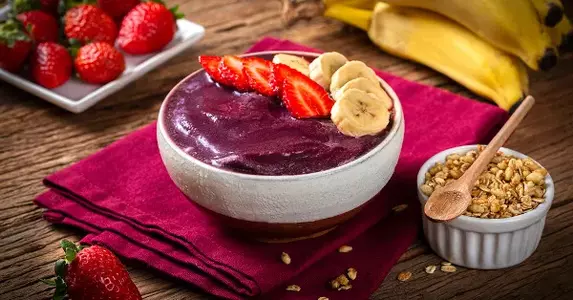

Brazilian Açaí.
What is Açaí?
The name “açaí” comes from the Tupi (a community of Brazilian natives) word for “weeping fruit”. Açaí berries are a fruit that grows on the açaí palm tree found in the rainforests of Central and South America. These berries usually have one inch in diameter and are composed of a deep purple skin, yellow flesh, and a large seed that occupies about 80 percent of the fruit. Their size and structure is similar of the grapes. The flavor of açaí berries is slightly sweet and earthy, compared to the taste of blueberries and very dark chocolate. (Real Simple, 2024)
Health Benefits
The truth is that açaí berries are very health. They are nutrient-rich, low in sugar, and offer various potential benefits. Açaí berries are composed mostly of: Polyphenols & Antioxidants, Fiber, Healthy Fats, Magnesium and Calcium. (Real Simple, 2024)
How Brazilians Eat It
North
Today, açaí is still a major part of the diet and culture of the Amazon region in northern Brazil, with most people eating at least once a day. The berries, without the pits, are crushed to become a pure. This puree is eaten at room temperature and usually topped with cassava flour or crispy tapioca. It is normal to find the açaí as a side dish of fish, shrimp or meat. (Going, 2023)
Others Regions
The others regions of Brazil eat açaí in a different way: Frozen and sweet. The açaí already arrive frozen to the rest of Brazil, because the fruit is very perishable. It can have texture similar to smoothie or ice cream, the açaí frozen puree is mixed with guaraná syrup to have sweet taste. It alse can have fruits, the most traditional are bananas and Strawberry. Finally, it is common to put some toppings in the frozen açaí such as granola, fresh fruit, nuts.(Going, 2023)